증류탑 완벽히 이해하기
증류란 서로간의 휘발성 차이(상대 휘발도 - relative volatility)를 이용해 혼합물을 분리하는 것을 의미한다. 물과 유기용매가 섞여있을 때, 가열하여 물은 끓지 않으면서 유기용매는 끓는 온도를 설정한 후 기체만을 포집하면 그 기체에는 유기용매가 많이 섞여있을 것이다. (끓는 점이 아니라도 물 역시 증발한다는 점에 유의)
1.기액평형도
증류의 이론적 기초가 되는 것은 기액평형이다. 이번 스터디에서는 벤젠과 톨루엔의 혼합물을 통해 증류에 대해 알아본다.
대기압이 1기압일 때, 벤젠의 끓는점은 80.1C, 톨루엔의 끓는 점은 110.6C이다.
여기서 알 수 있는 것은, 벤젠의 경우 기체가 되기 쉽고 톨루엔은 상대적으로 액체가 되기 쉽다는 것이다.
잠시 관점을 전환하여 온도가 아닌 압력의 관점에서 벤젠과 톨루엔을 보자. 다음 두 가지의 표는 80도에서 1몰의 벤젠과 톨루엔의 압력에 따른 상을 나타낸 것이다.
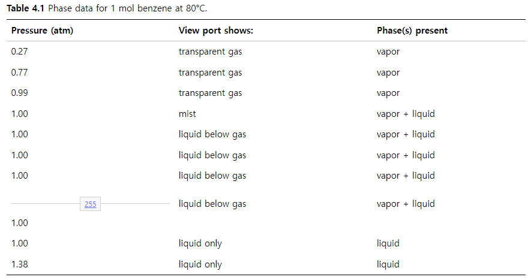
벤젠의 경우 1기압에서 기체+액체 상이며 그 밑으로는 기체, 그 위로는 액체 상이다.
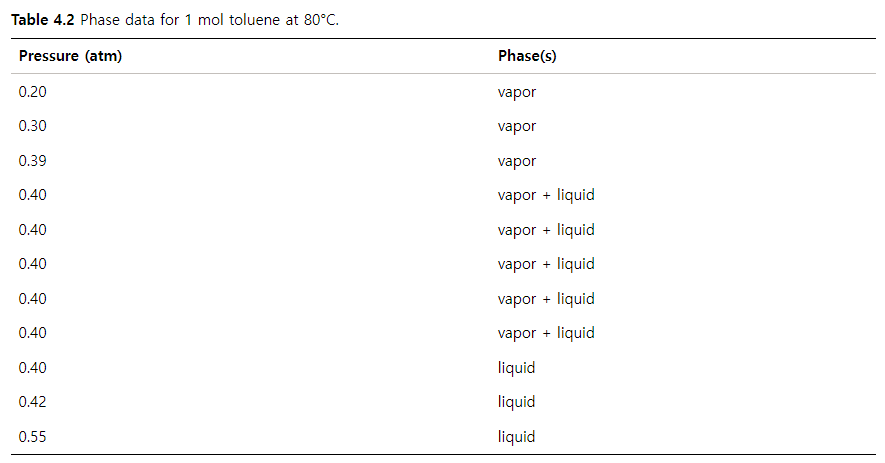
톨루엔의 경우 0.4기압에서 기체+액체, 그 밑으로는 기체, 그 위로는 액체 상이다.
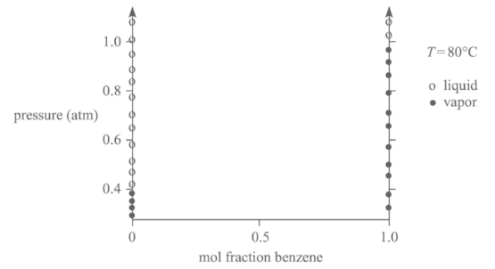
이를 한 그래프에 나타내면 다음과 같다. X축은 벤젠의 몰 분율로, 맨 왼쪽 점 부분은 벤젠이 0% 다시말해 순수 톨루엔을, 오른쪽 점은 순수 벤젠을 의미한다. 벤젠을 살펴보면 1기압까지는 기체이며 1기압을 넘어서면 액체가 된다. 톨루엔은 0.4기압을 기점으로 기체와 액체상이 바뀌게 된다.
문제는 벤젠과 톨루엔을 1:1로 섞은 가운데 지점이다. 여기서는 기압이 0일때는 당연히 기체겠지만, 기압이 올라갈 수록 기체상과 액체상이 생길 것이다. 이때 기체에서는 휘발성이 높은 벤젠의 비율이 많을 것이고 액체에서는 톨루엔의 비율이 많을 것이다.
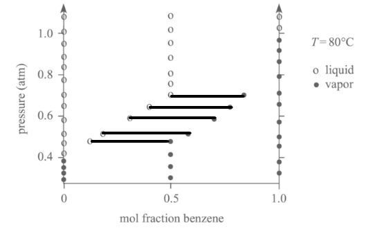
즉 0.47기압 쯤에서 기상과 액상 두가지가 존재하게 되는데, 액상(하얀 점)에서는 톨루엔의 비중이 높고 벤젠의 몰 비율이 적은 점이 형성되는 것이다. 이후 기압이 올라가면 올라갈 수록 벤젠도 액화되면서 액상에서 벤젠과 톨루엔의 비중이 1:1에 가까워지는 것이다. 기압이 올라갈 수록 톨루엔은 다 액체가 되면서 기체에는 벤젠만이 남고, 따라서 기체의 벤젠 비중은 올라간다.
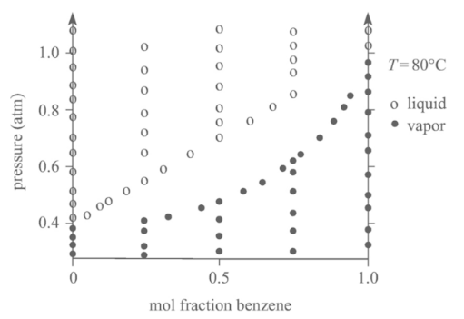
이제 몰 비율을 0.25, 0.75인 부분에서도 똑같은 작업을 수행한다. 이런 식으로 비율을 다르게 하며 기-액 포인트를 측정하다보면 다음과 같아진다.
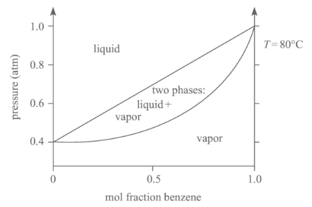
이는 p-xy다이어그램이다. 또 T-xy다이어그램은 다음과 같다.
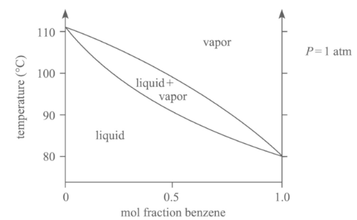
만약 가운데 영역에 점이 있다면 그것은 기체+액체의 2페이즈로 구성된다.
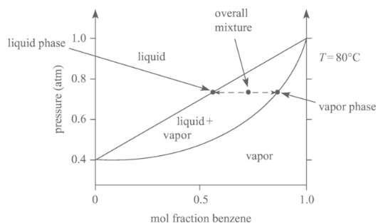
즉 대응선(가로선)을 죽 그어서 위쪽 라인과 만나는 지점은 액체상이며 아래쪽 라인과 만나는 지점은 기체상이다. 당연히 기체상은 벤젠 비율이 높고, 액체상은 톨루엔 비중이 기체상보다는 높다.
이제 액상에서 벤젠 비율을 xb, 기상에서 벤젠 비율을 yb라고 정의한다.
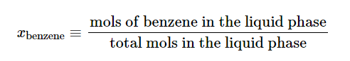 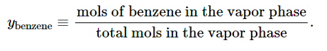
대응선을 통해 그 포인트에서 액상과 기상의 비율이 몇대몇인지도 알 수 있다.
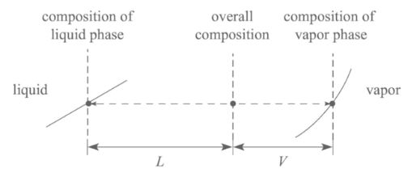 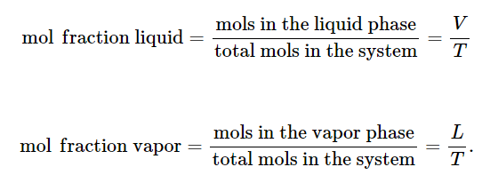
2.증류탑의 기초(다단 증류기)
그런데 이러한 단증류의 단점은, 일정 비율 이상으로 벤젠의 비율을 올릴 수 없다는 것이다. 예컨데, 벤젠:톨루엔 1대1로 섞인 혼합물은 단증류로 최대 83%몰 비율의 벤젠만 추출할 수 있다. 따라서 100% 순도의 벤젠을 얻을 수는 없을 것이다.
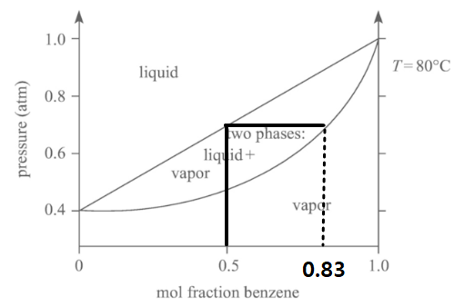 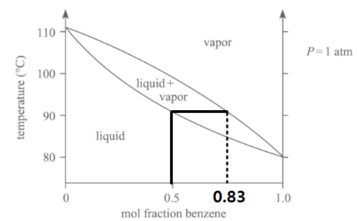
이러한 문제를 해결하기 위해 하나의 증류기를 더 추가한다.
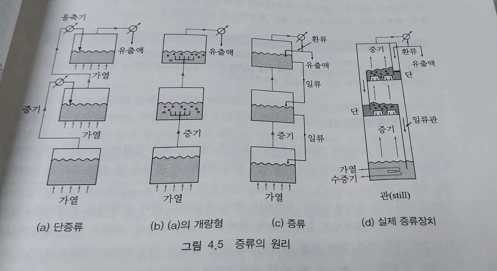
그림에서 (a)는 단증류를 여러개 설치한 것이다. 1단에서 가열된 증기는 2단에서 냉각되고 다시 증류된다. 이 과정을 거치면 기상에서 높은 벤젠 함량이 가능하게 된다.
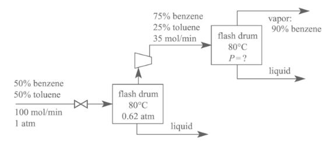 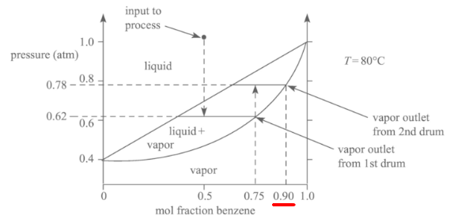
따라서 실제 공정은 여러개의 증류기를 설치한 다음과 비슷한 형태를 띈다.
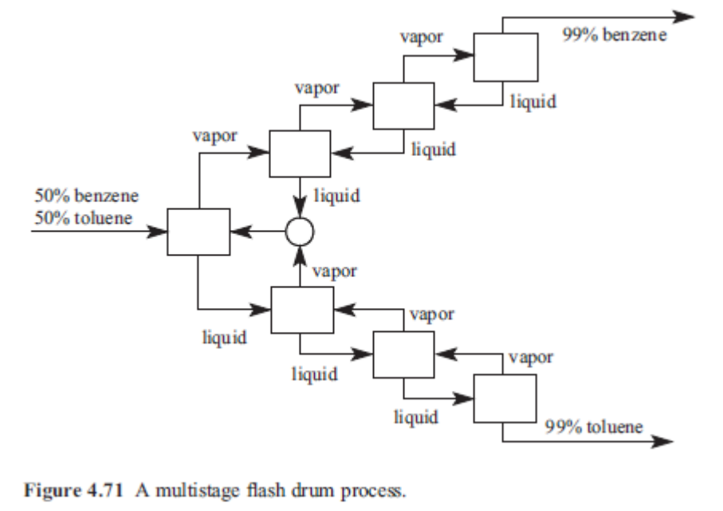
이때 액체는 계속해서 단마다 나오므로, 그 액체를 아래 단으로 환류시킨다. 또한 밑 단에서 액체를 정제하면서 나오는 기체는 위로 환류시킨다. 그렇게하면 최종적으로 50% 벤젠, 톨루엔 혼합물을 99% 벤젠과 99% 톨루엔으로 분류할 수 있을 것이다.
이를 흡수에서 분석했던 것과 유사한 방법으로 분석해보려고 한다. 그러려면 먼저 그래프의 변환이 필요할 것이다.
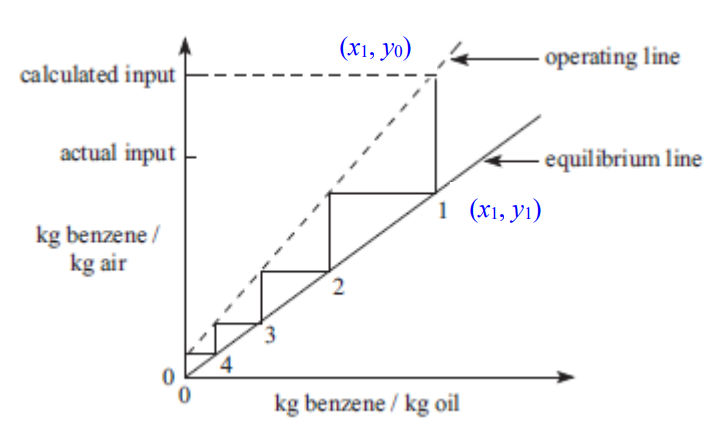
흡수탑에서는 x축이 xb, y축이 yb인 그래프였으며 평형선과 조작선이 존재하였다. 마찬가지로 증류에서도 x축과 y축을 불순물 비율로 나타낸 그래프를 그려보자.
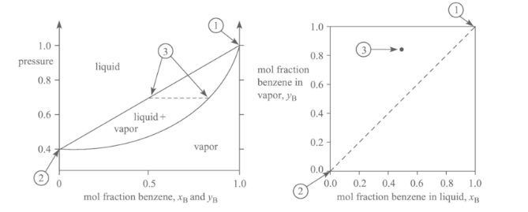
1점은 벤젠 100%로 (1,1) , 2점은 톨루엔 100%로 (0,0)이다. 이러한 그래프를 그리게 되면 다음과 같다.
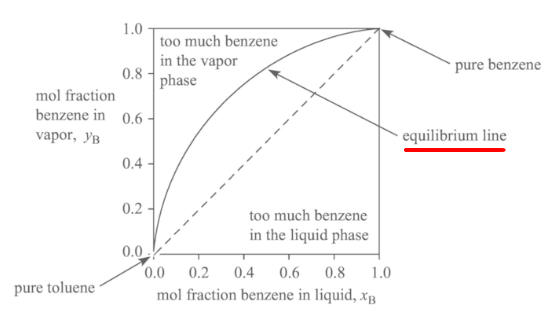
3.증류탑의 해석
이제 실제 증류탑을 이 그래프를 통해 해석해보자.
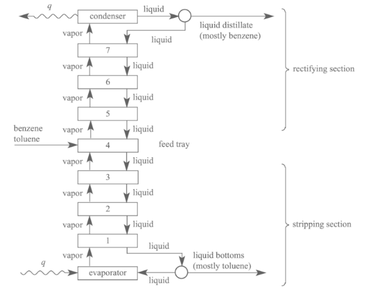
기호로 표시하면 다음과 같다. y는 기체에서 벤젠의 비율이고 x는 액체에서 벤젠의 비율이다.
위로 올라갈 수록 y의 벤젠 비율은 증가하고 아랫단으로 갈 수록 액체에서 톨루엔 비율은 커질 것이다. x는 밑으로 갈 수록 줄어든다.
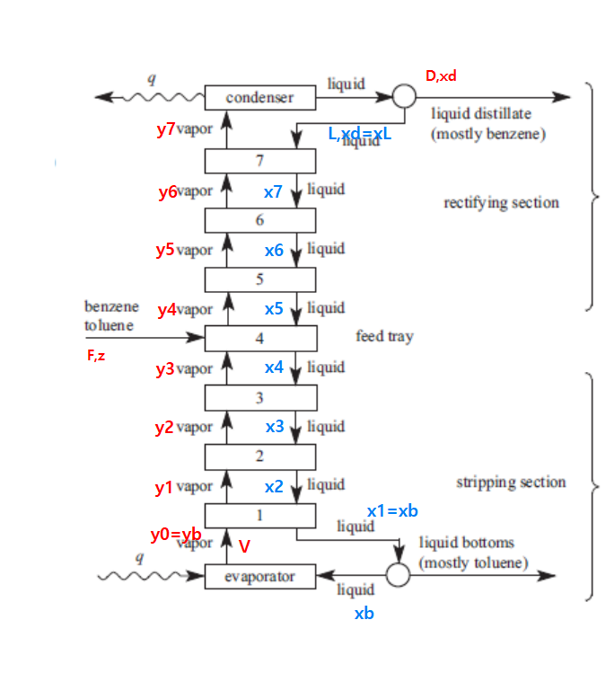
이제 이것을 (1) 탑 전체 (2) 농축부 R (윗단), (3) 회수부 S(아랫단), 순서로 각각 물질 수지식을 분석해보자.
(1) 탑 전체
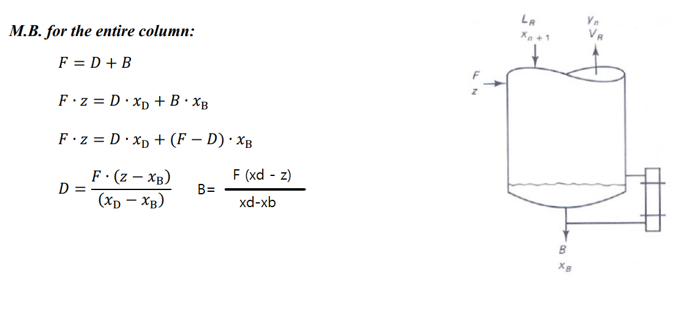
원료 공급유량 F와 각각의 조성만 있으면 유출액과 탑저액의 유량을 계산할 수 있다.
(2) 농축부
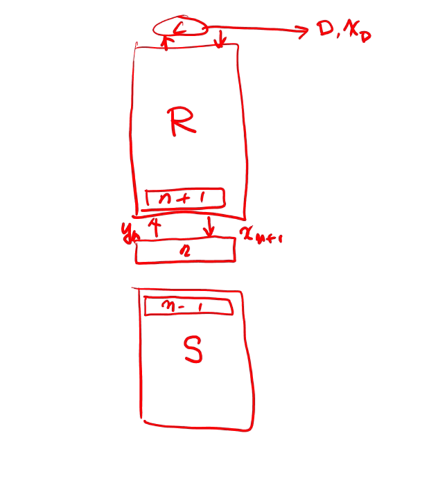
탑의 그림이 위와 같다. 이때 R부분이 농축부이다. 여기에서 들어오고 나가는 것에 집중하자.
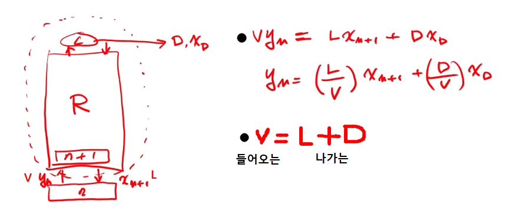
먼저 n단에서 V 유량만큼의 기체가 올라오고 L만큼의 액체가 내려온다. 각각에서 벤젠 조성은 yn, xn+1이다.
이때 두 가지 물질 수지 식이 성립한다. 이들을 조합하여 다음 식을 얻을 수 있다.
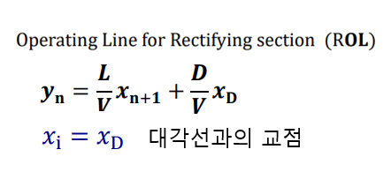
(3)S섹션
이제 아랫부분(S섹션)을 살펴보자.
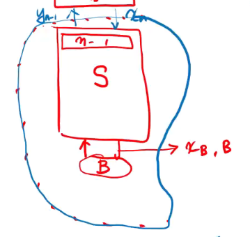
위에서 L'의 액체가 들어오고 V', B의 기체가 빠져나간다. 따라서 다음과 같다.
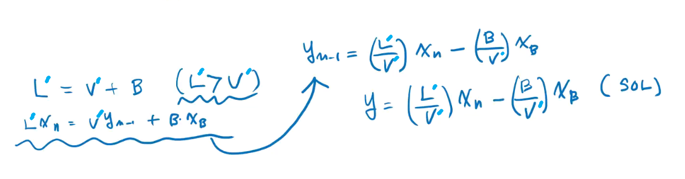
정리시 각각의 영역에서 조작선은 다음과 같다.
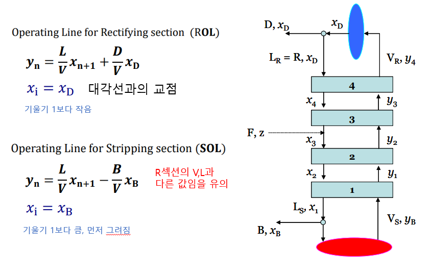
이를 그래프에 선을 나타내면 다음과 같다.
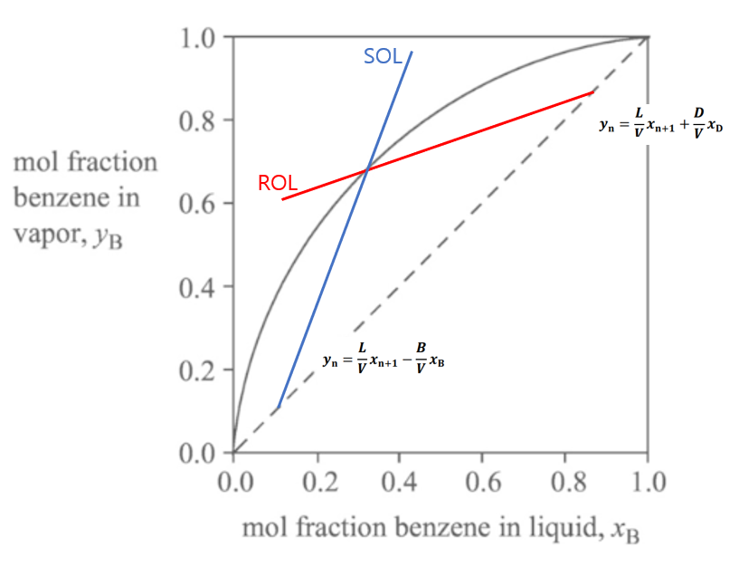
해석은 다음과 같다.
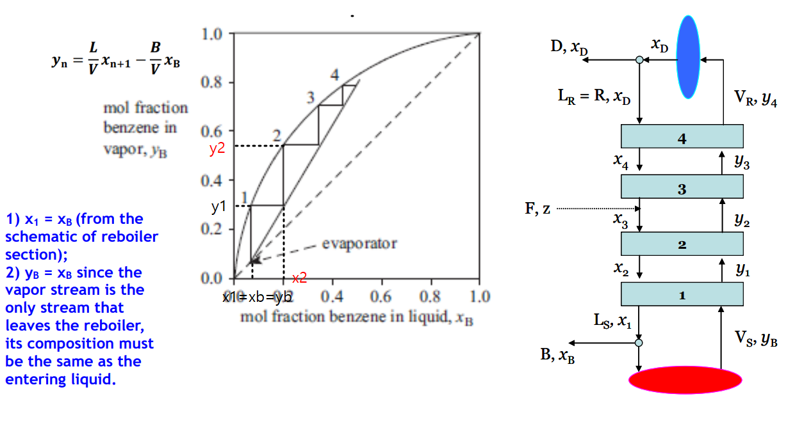
ROL의 해석도 똑같이 진행된다.
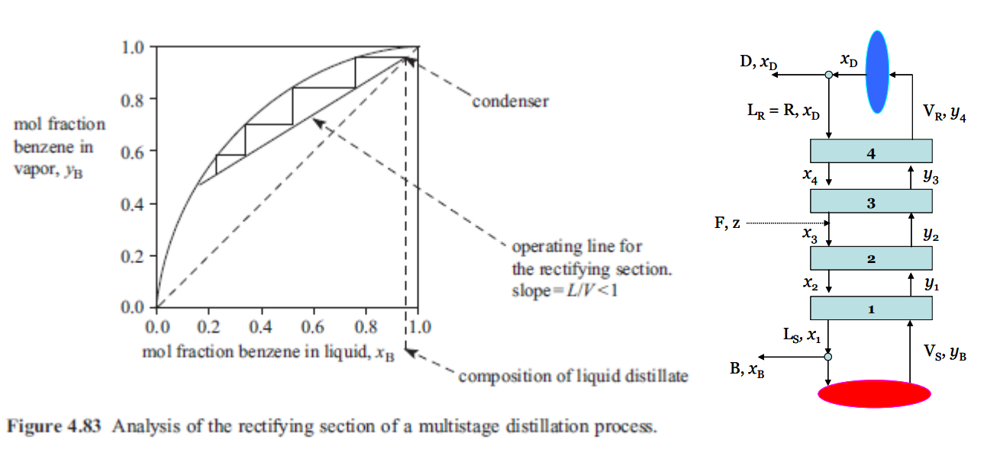
그러면 언제 SOL에서 ROL으로 스위치되는가? 그것은 피드스트림을 찍는 순간이다. 예제를 통해 알아보자.
공급물이 xb=0.35, yb는 0.7일 때, 단계산을 하시오.
1) 먼저 ROL과 SOL의 방정식을 계산하고, 이를 표에 그린다.
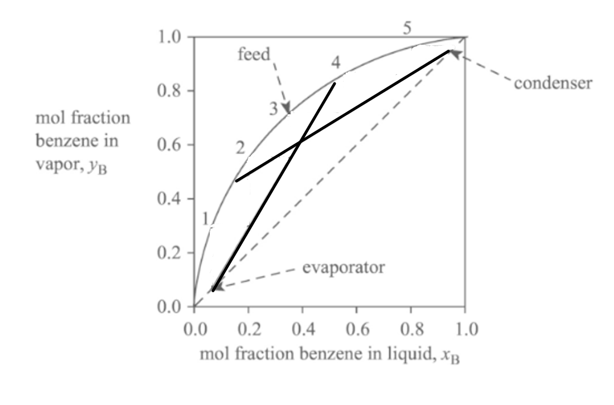
2)공급물 포인트 지점을 찍어놓는다.
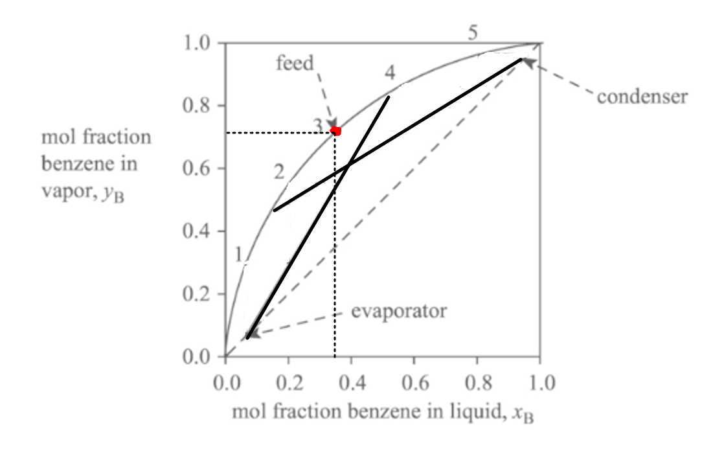
3)피드 지점을 찍는 순간, 다음 선으로 넘어가도록 한다.
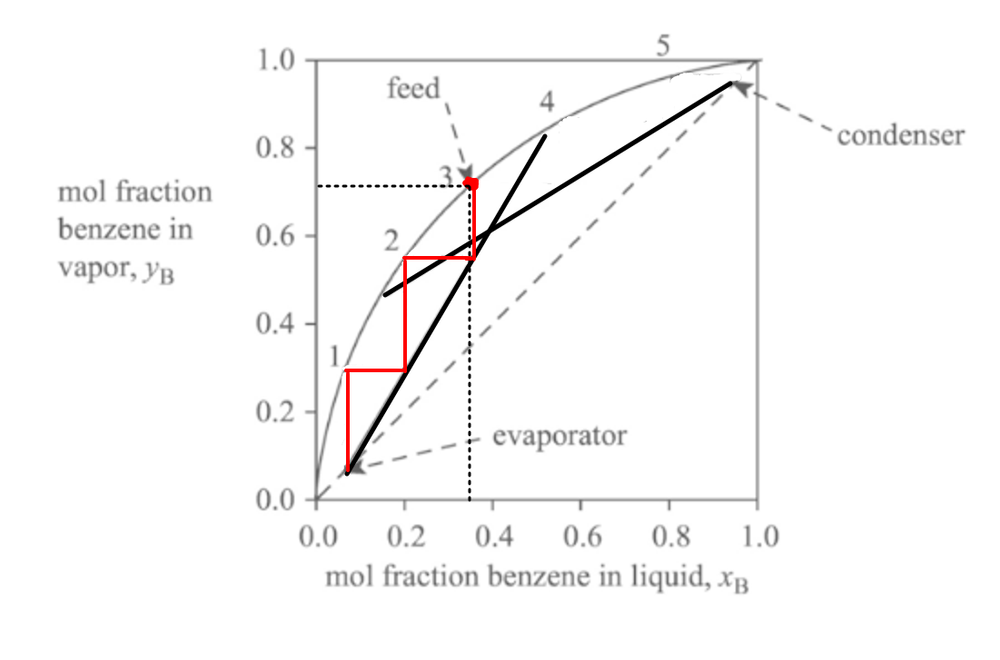
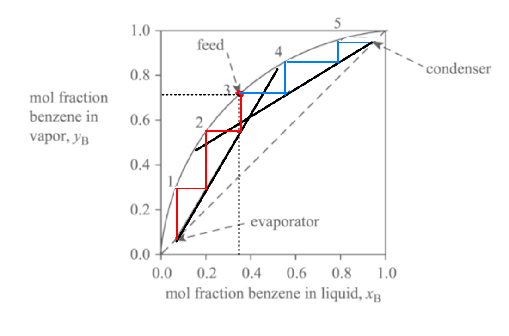
4)이를 해석한다
: S섹션에 2개의 단이, R섹션에 2개의 단이, 그리고 3번째단이 공급단이다. 총 5개의 단으로 구성되어 있을 것이며 다음과 같은 구성일 것이다.
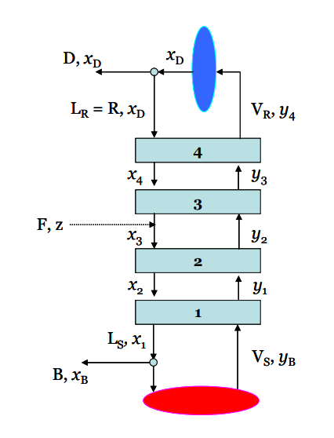